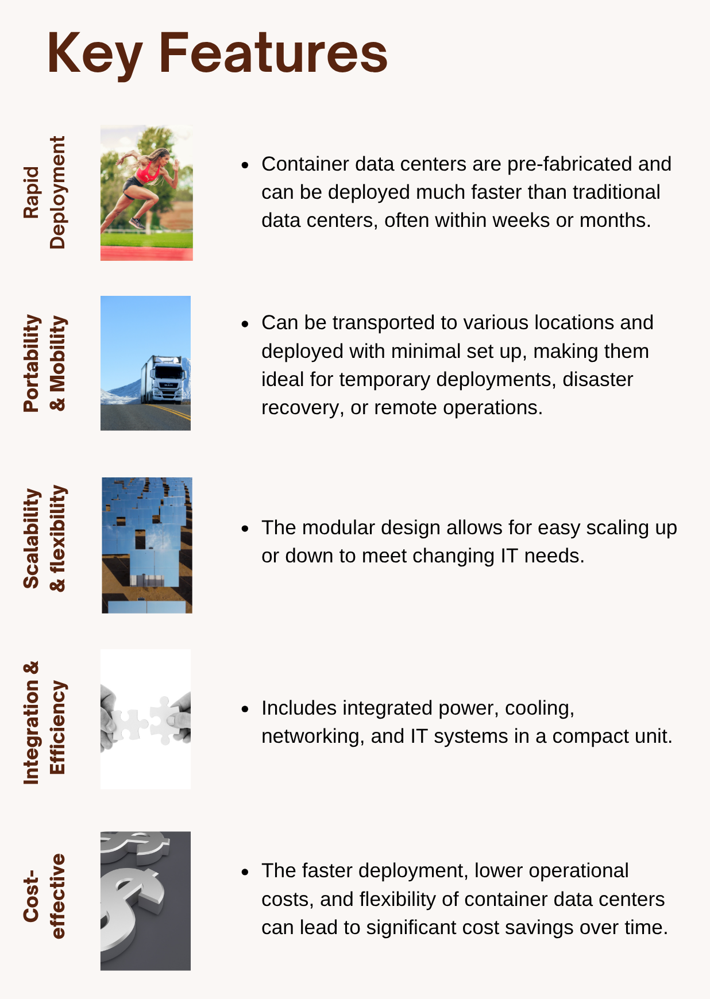

Introduction to Container Data Centers
Summary
A container data center is a self-contained, portable computing facility built into a standard shipping container or similar modular enclosure. They offer a cost-effective and flexible approach to deploying infrastructure in diverse environments—ranging from edge computing sites and remote industrial operations to temporary or disaster recovery locations.
Figure 1: Benefits and features of container data centers.

Example
A telecom company needs to expand 5G coverage in a remote area. Instead of building a new data center, they deploy a container data center on-site. Delivered by truck and operational within hours, it provides local computing power and reduces latency—offering a fast, cost-effective solution.